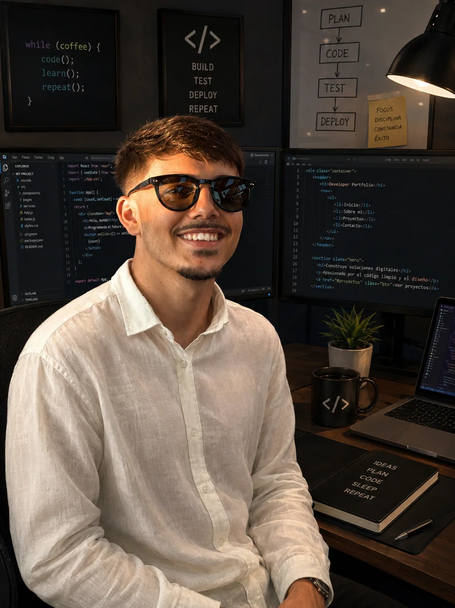
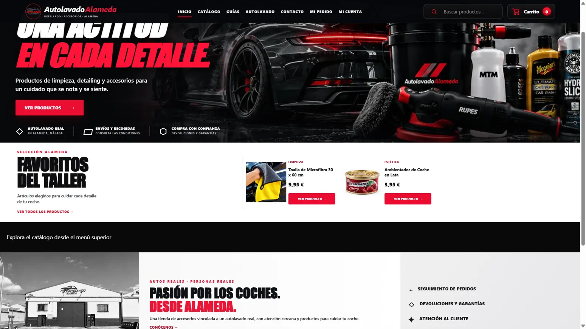
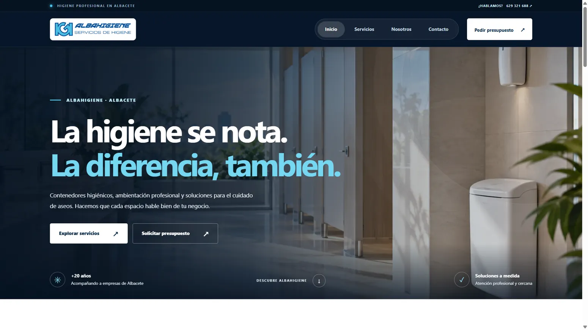
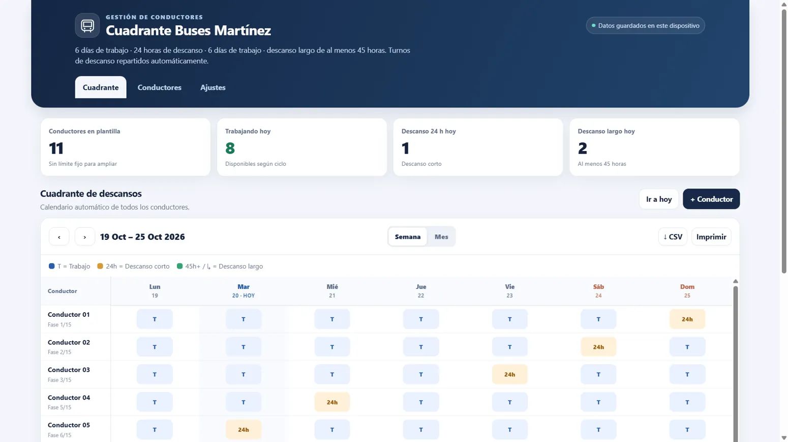

Sistemas y redes
Instalación y mantenimiento de sistemas operativos, configuración de equipos, redes, virtualización y almacenamiento.
↗SISTEMAS · DESARROLLO WEB · AUTOMATIZACIÓN
Soy Iván Martínez, Técnico Superior en Administración de Sistemas Informáticos en Red. Combino conocimientos de infraestructura, programación y automatización para transformar ideas en soluciones funcionales.

IT · Sistemas · Web · Automatización
01 / SOBRE MÍ
Me interesa entender cómo funcionan las cosas y encontrar una forma mejor de hacerlas. Desde configurar una red o montar un ordenador hasta desarrollar una plataforma web completa.
Instalación y mantenimiento de sistemas operativos, configuración de equipos, redes, virtualización y almacenamiento.
↗Páginas corporativas, aplicaciones de compraventa y plataformas eCommerce con lógica de negocio y bases de datos.
↗Herramientas y scripts para simplificar tareas, organizar información y mejorar procesos de trabajo.
↗02 / PORTAFOLIO
Una selección de soluciones desarrolladas para necesidades reales. Algunos proyectos incluyen galerías con capturas reales. Puedes conocer sus funciones y detalles seleccionando cada proyecto.

CAPTURA REALDesarrollo de una tienda online de productos de automoción con catálogo, gestión de clientes, pedidos, pagos y panel de administración.

CAPTURA REALDiseño de una presencia web para una empresa de servicios, con experiencia adaptable a móvil y animaciones al desplazarse.

CAPTURA REALAplicación para organizar cuadrantes de trabajo, visualizar descansos y facilitar tareas de planificación.
Proyecto doméstico de almacenamiento en red, utilizando el router y la infraestructura local para acceder a archivos desde distintos dispositivos.
Desarrollo de una página orientada a mostrar vehículos disponibles y facilitar la exploración de un catálogo de coches.
03 / COMPETENCIAS
Combino conocimientos de infraestructura y desarrollo. He utilizado distintas tecnologías en formación, prácticas y proyectos personales, con apoyo de herramientas de IA cuando aportan valor.
04 / TRAYECTORIA
IES Miguel Esteo Romero
CESUR Málaga Este
Cloud Operations · Cloud Architecting
Montaje, reparación y mantenimiento de equipos informáticos y sistemas.
WordPress, SEO, automatización con scripts y web scraping.
Operaciones logísticas, clasificación y preparación de paquetes.
05 / CONTACTO